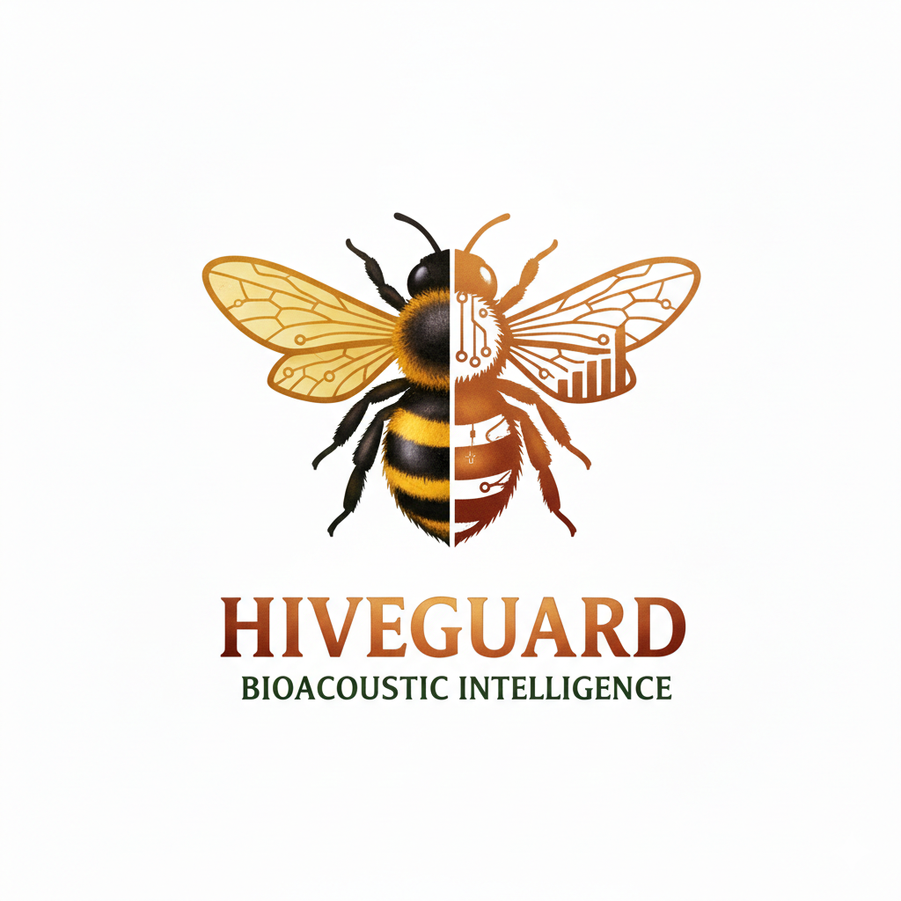

Bioacoustic Beehive Intelligence
Know what's happening inside your hives — without opening them.
Development Status: HiveGuard is in active development and field testing. The hardware, firmware, and cloud platform are functional. Check back for updates on availability.
HiveGuard listens to your bees. Using research-grade bioacoustic analysis running entirely on-device, it identifies queen status, swarming intent, and colony stress in real time — without opening the hive. Combined with environmental sensors and hive weight tracking, HiveGuard gives beekeepers and researchers a complete picture of colony health.
Data syncs to the cloud for long-term trend analysis across your entire apiary. The web portal supports both Beekeeper Mode (plain-language health summaries and actionable guidance) and Researcher Mode (raw spectral features, full CSV exports, frequency band analysis, and classification confidence scores). Designed for the field — weatherproof, battery-powered, and built to run for months.
A high-sensitivity MEMS microphone inside the hive captures the colony's acoustic signature continuously — with enough frequency resolution to distinguish queen piping from worker buzz
On-device classification analyses every audio frame in real time using proprietary spectral algorithms — no cloud dependency, no latency, works offline
Three-point calibration (silence, empty hive, healthy colony) establishes per-device baselines stored on-device. Calibration profiles persist across reboots and adapt to your specific hive and bee species
Tiered alerts (approaching, warning, critical) notify you only when confident. Walk up to the hive and see live spectral data via Bluetooth
Comprehensive data logging on-device for months. Data syncs to the cloud portal where AI generates plain-language colony reports or raw spectral exports for research
Confirms your queen is active and the colony is queenright — the foundation of a healthy hive
Detects pre-swarm behaviour days in advance, giving you time to split the hive or take preventive action
Alerts you when the colony shows signs of queenlessness — critical for timely requeening
Identifies stressed or agitated colonies that may be dealing with disease, pests, or environmental threats
Weight tracking shows when foragers are bringing in nectar — know the best time to add supers
Temperature and humidity trends help you understand how weather affects your colonies
Most hive monitors on the market measure temperature and weight. HiveGuard goes further — it listens to your bees and translates what they're telling you into plain language guidance.
Other monitors tell you the temperature. HiveGuard tells you the queen is missing, your colony needs more space, or robbing is underway. It decodes the acoustic language of the colony and translates it into actions you can take
Rain and wind contaminate every acoustic hive monitor. HiveGuard is the only system that automatically detects weather events, flags affected readings, and excludes them from health assessments — your colony data reflects real bee behaviour, not the forecast
A three-point calibration system learns the unique sound profile of your specific device, hive, and bee species. African bees sound different from European bees — HiveGuard adapts to each colony instead of using generic thresholds
Tells you when to add supers before the colony gets congested — not after. By tracking weight gain, foraging intensity, and activity trends, HiveGuard gives you 3 to 5 days notice to act before swarming becomes a risk
Get a detailed health assessment written in plain language — not charts and numbers. The AI reads your colony's data and tells you what's happening, what's concerning, and what to do about it, tailored to your specific hive
Enterprise-level colony intelligence at a fraction of the cost of competing systems. Designed for beekeepers everywhere — from commercial apiaries to small-scale farmers in East Africa
Know what's happening inside your hives without opening them — reduce disturbance and spot problems early
Monitor hundreds of hives remotely, prioritise inspections, and reduce colony losses across your operation
Researcher Mode exposes raw spectral features, band energies, and classification confidence scores. Export comprehensive CSV datasets for your own analysis pipelines. Non-invasive continuous data collection for pollinator studies
Teach students about bee biology and environmental monitoring with real-time colony data
Verify colony strength and queen status during pollination contracts — accountability built in
HiveGuard is in active development and field testing. Get in touch to learn more, request early access, or discuss research collaboration.